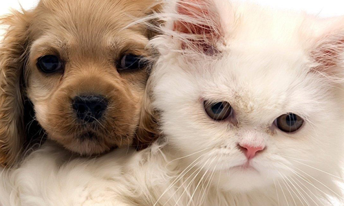

This is the way to go
These two guys became buddies way back in time.Now let me tell you a story about these animals.Back in some old time I guess their was a cat and a dog.They did not like each other but always had to be next to each other since they were in the same house. They were horrible to each other.The cat was named Jose and the dog was named Dakota.They got to like each other because Jose saved Dakota from a car.It was the start of a friendship.They started sharing food with each other and they started going to the bathroom together.Until Jose got tooken to the pound.Dakota knew he needed to repay Jose so he saved him.They were friends forever.Until they both died the end.